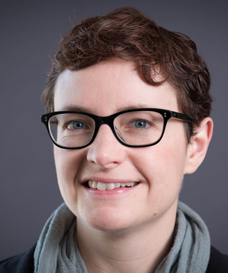

BREAKOUT SESSION
Adam Shlien
Professor, University of Toronto
Adam Shlien is the Associate Director of Translational Genetics at the Hospital for Sick Children and a Scientist at the SickKids Research Institute. His team uses sequence-based genomics to discover and understand genetic mutations in paediatric cancer patients. He also works on introducing genomics into clinical practice and leads precision medicine and sequencing initiatives nationally. Adam received his PhD from the University of Toronto and did postdoctoral research at the Sanger Institute.

BREAKOUT SESSION
Elizabeth Gillies
Professor, Western University
Elizabeth Gillies is a Professor in Chemistry and in Chemical and Biochemical Engineering at Western University, and Director of the Centre for Advanced Materials and Biomaterials Research. Her research focuses on the development of new functional and biodegradable polymers and their applications in biomedical areas including regenerative medicine and drug delivery. She has received awards including a Tier 2 Canada Research Chair in Biomaterials Synthesis, and E. W. R. Steacie Memorial Fellowship.
Amr Abdelgawad graduated from the University of Waterloo with a Master's degree in Business, Entrepreneurship, and Technology and a Bachelor's degree in Nanotechnology Engineering. Co-founded two startups. Passionate about healthcare, science, and improving the general quality of life. He has a vision to disrupt the healthcare system, where he believes that he and his team can provide better resources for physicians to make more informed decisions regarding their patients.

TECH PANEL
Ed Harvey
Professor/Co-Founder, McGill University/MY01
Dr. Harvey is a professor of surgery at McGill University, where he earned his medical degree. His research interests in fundamental and clinical aspects of bone healing include implant and fracture optimization, stem cells, outcome evaluation after surgery, biosensors and evaluation of novel hardware and surgical approaches to expedite repair. His funding sources include the Canadian Institutes of Health Research, Natural Sciences and Engineering Research Council of Canada and Orthopaedic Trauma Association, DOD, MITACs.

TECH PANEL
Michael Winter
Director of Product, Mavencare
Mike lives to take on big challenges and adventures. He is passionate about technology/engineering, senior care, product design, martial arts, sailing, Formula 1, and entrepreneurship. Today, Mike is the head of Product Management and Engineering at Mavencare (a Toronto based start-up), where he works with amazing Clinical and Engineering leaders to re-think and re-shape aging in place and homecare. Before Mavencare, Mike worked with teams that addressed problems like moving telecommunications into the cloud, and building radar equipment simulators for the Coast Guard.

PITCH COMPETITION
Allan Miranda
Head of JLABS Canada
Allan Miranda is the Head of Johnson & Johnson Innovation, JLABS in Canada where he leads the translation of science and technology into solutions across the pharmaceutical, medical device, consumer, and healthtech sectors. He spent 12 years at Janssen Canada where he led market access strategy for a >$1B product portfolio. He has also worked on technology transfer and business development for various Canadian biotech companies. Allan received his PhD from Queen’s and his MBA from McGill.

PITCH COMPETITION
Nikhil Thatte
Principal, Lumira Ventures
Nikhil joined Lumira Ventures in March 2019. As Principal, Nikhil will focus on business development, investment due diligence and technical analysis including forecasting and financial modeling. Prior to Lumira Capital, Nikhil worked as a Director with DRI Capital, a pioneer in royalty monetization solutions, where he managed relationships with inventors, academics and companies, and supported in the investment due diligence process. Nikhil holds a Bachelor's Degree in Chemical Engineering from McGill University.
PITCH COMPETITION
Bharat Srinivasa
Principal & Co-Founder, Amplitude Ventures
Dr. Bharat Srinivasa is a Co-founder and Principal at Amplitude Ventures. He was previously on the investment team at the BDC Healthcare Fund. Before this, he was a consultant in the forecasting and valuation practice at Foster Rosenblatt, an international life science consulting firm for biotech and pharma companies. Bharat was responsible for providing forecasting, commercial analytics and pricing & market access analysis. Bharat has a PhD in Experimental Medicine and Masters of Science in Microbiology and Immunology from McGill University.

BREAKOUT SESSION
Meaghan O'Reilly
Professor, University of Toronto
Meaghan O'Reilly, Ph.D., is a Scientist at Sunnybrook Research Institute, and an Assistant Professor at the University of Toronto. She received her PhD in Applied Physics from the University of Eastern Finland (2012). Her research interests include delivery, monitoring and control of bubble-mediated therapies in the CNS, with a recent focus on targeted drug delivery to the spinal cord, and the development of devices and methods for transvertebral focusing at clinical scale.

BREAKOUT SESSION
Shideh Ameri
Professor, Queen's University
Dr. Shideh Kabiri Ameri is an Assistant Professor in the Department of Electrical and Computer Engineering at Queen’s University. Her research is mainly focused on two dimensional materials based electronics with applications in sensing, bioelectronics, wearables, internet of things (HMI) and human machine interfaces (HMI). Her research work has been recognized internationally and repeatedly highlighted by media and news outlets including BBC, IEEE Spectrum, Phys.Org, International Business Times UK and many more.

TECH PANEL
Ken Pritzker
Professor/CEO, University of Toronto/York MedTech Ventures
Dr. Pritzker is Professor Emeritus in the Department of Laboratory Medicine and Pathobiology, Department of Surgery, and the Institute of Biomaterials and Biomedical Engineering, University of Toronto. With over 270 scientific publications and 26 book chapters, Dr. Pritzker is a recognized leader internationally in the fields of arthritis, biomaterials, genomics, cancer diagnostics and nanotechnology. Dr. Pritzker is CEO, York Medtech Ventures Inc, and cofounder of Rna Diagnostics Inc, Proteocyte Diagnostics Inc and more.

TECH PANEL
Brian Courtney
Co-Founder, Conavi Medical
Dr. Brian Courtney is an assistant professor in the Department of Medicine at the University of Toronto and a Clinician Scientist at Sunnybrook Research Institute. After completing a degree at the University of Waterloo, he did a Masters in Electrical Engineering at Stanford University, where he co-founded two medical device companies and completed his MD. Brian is a principal co-founder and CEO of Conavi Medical Inc. in Toronto, a scale-up company that is developing minimally invasive imaging systems that employs over 90 people.

TECH PANEL
Cari Whyne
Professor, University of Toronto
Dr. Cari Whyne, PhD, FIOR, is the Susanne and William Holland Chair in Musculoskeletal Research at Sunnybrook Health Sciences Centre in Toronto. She is also a Full Professor in the Department of Surgery at the University of Toronto. Dr. Whyne received her PhD from the University of California Berkeley / University of California San Francisco in Bioengineering. The focus of her work is clinically translational bioengineering research, including cancer in bone, spinal/lower extremity/thin bone biomechanics and fracture fixation/healing.

PITCH COMPETITION
Ricky Mehra
General Partner, Continuum Ventures
Ricky Mehra is an academic, futurist and entrepreneur from Toronto, Canada. He recently had ended his time at Exit, a big data predictive analytics company he founded that was acquired by a $23B market cap company (IQVIA). He also spent 14+ years servicing intelligence globally to the largest Medical Device and Pharmaceutical companies. Ricky now manages a venture capital fund (Continuum Ventures) focused on early-stage investments in healthtech and longevity companies focused in the fourth industrial revolution.

PITCH COMPETITION
Amine Benmoussa
Principal, BDC
Amine Benmoussa is Principal in BDC Capital's Healthcare Venture Fund and has 10+ years of venture capital experience. Before joining BDC Capital in 2011, Amine was on the Life Science investment team at FSTQ. He is currently on the board of directors of BlueDot, Hacking Health Accelerator, and Swift Medical. Amine studied Computer Science at Concordia University and received his MBA from HEC Montreal. He has also completed programs at Harvard Business School and the Rotman School of Management.

PITCH COMPETITION
Armen Bakirtzian
CEO & Co-Founder, Intellijoint Surgical
Armen Bakirtzian is the CEO and Co-Founder of Intellijoint Surgical. He led the growth of Intellijoint Surgical's flagship product from a fourth-year design project to a globally-adopted surgical navigation system that has been used in over 10,000 hip replacements. Armen spearheaded the creation of
Canada's first industry-led innovative hub to help medtech companies scale within Canada. He is a member of the Health/Biosciences Economic Strategy Table with the Federal Government of Canada.